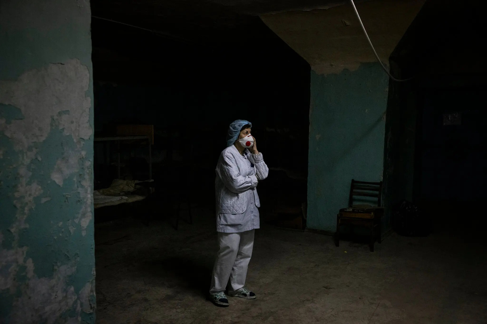
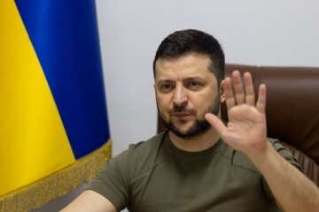
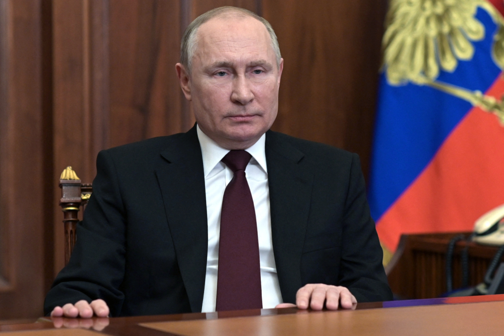
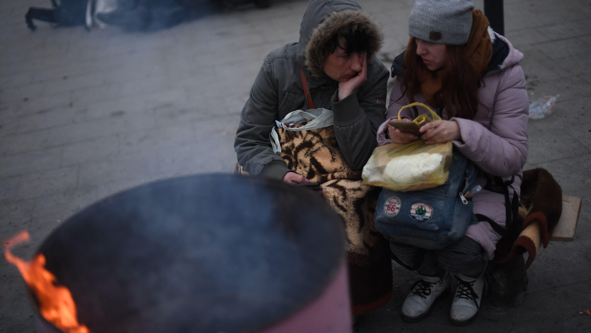

Statements from U.S. President Joe Biden CNN's Article  A Missile Struck Lviv on March 26th The New York Times' Article Read more on Biden and Putin U.K.'s The Independent Website  On Volodymyr Zelenskyy, President of Ukraine Official Ukraine Presidential Website  Kremlin Responds to Biden's Speech NBC's Article  Statistics on Civilian Casualties Forbes' Article